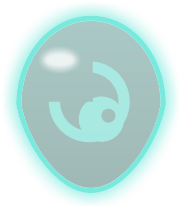
Egg
ไข่และการฟัก
ปลาทุกตัวเข้าเกมเป็นไข่ — แตะใบที่พร้อมเพื่อฟัก · ไข่มีเก้าแบบ หน้าตาบอกที่มา ของบนยอดกับสีของวุ้นบอกธาตุของลูกข้างใน
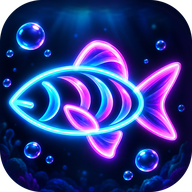
Abyss LineageNECH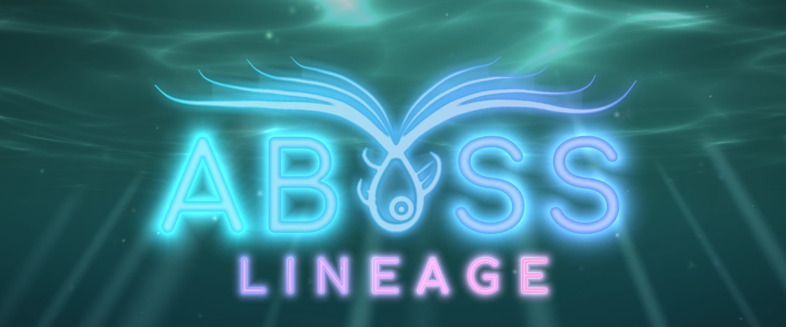
เพาะปลาเรืองแสงในตู้เหนือเหวมหาสมุทร ผสมพันธุ์ คัดสายเลือด
แล้วพาฝูงของคุณลงไปสู้ในหกโลกใต้ทะเลลึก
สำหรับ Android · iPhone · iPad · เล่นฟรี · มีโฆษณาแบบกดดูเองเพื่อรับของ และซื้อของในเกมได้
The lineage loop
ปลาทุกตัวเกิดจากยีนเก้าช่อง ผสมสองตัวแล้วลูกได้ชิ้นส่วนและขั้นจากพ่อแม่ — เป้าหมายคือเพาะปลาแบบใหม่ที่เก่งขึ้นและไม่ซ้ำใคร
วงของเกม: เลี้ยงให้โต → ลงสนามเก็บของ → เอาของมาผสม → ได้ลูกที่ดีกว่าเดิม
How it works
ไล่ไปตามวงทีละช่วง — แตะไอคอนบนวงเพื่อกระโดดไปช่วงนั้น
ช่วงที่ 1
ฟักไข่ ป้อนอาหาร แต่งตู้ — ดูลูกปลาโตจนพร้อมลงสนาม

Egg
ปลาทุกตัวเข้าเกมเป็นไข่ — แตะใบที่พร้อมเพื่อฟัก · ไข่มีเก้าแบบ หน้าตาบอกที่มา ของบนยอดกับสีของวุ้นบอกธาตุของลูกข้างใน
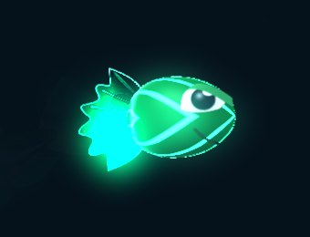
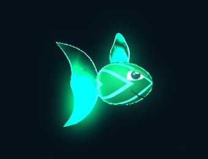
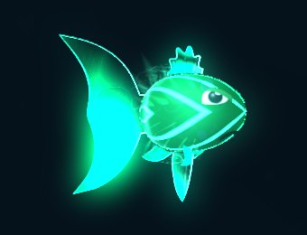
Grow
ลูกปลากิน 3 มื้อเป็นวัยรุ่น กินอีก 4 มื้อเป็นเต็มวัย — ปลาเต็มวัยเท่านั้นที่ลงสนามและผสมพันธุ์ได้
Decor
ของตกแต่งและฉากหลังรวม 43 แบบ — แต่งตู้ให้เป็นบ้านของสายเลือดคุณ
ช่วงที่ 2
ท่ามาจากชิ้นส่วน กดตามจังหวะ กันด้วยฝูงปลา และเลือกธาตุให้ชนะทาง
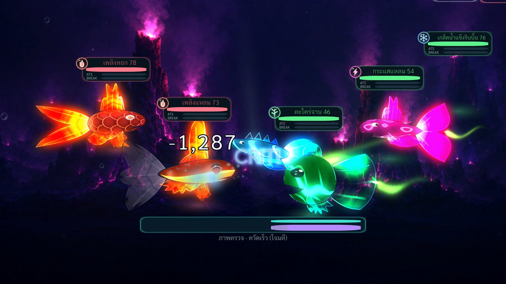
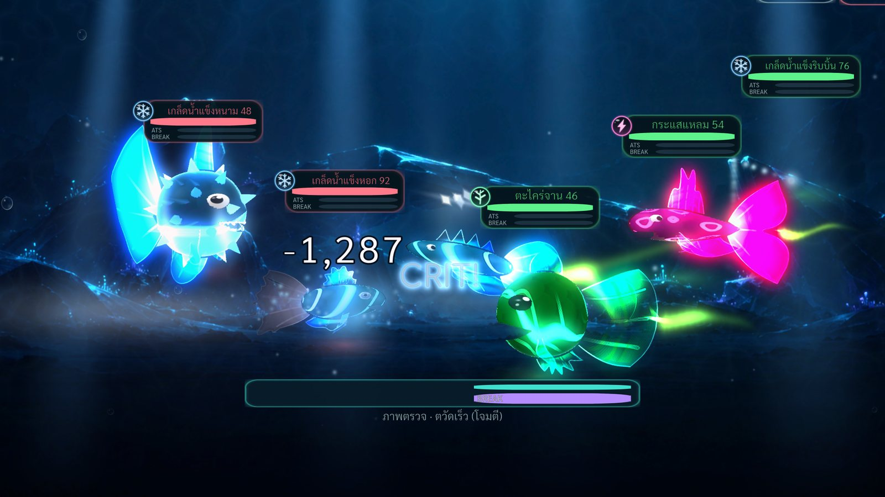
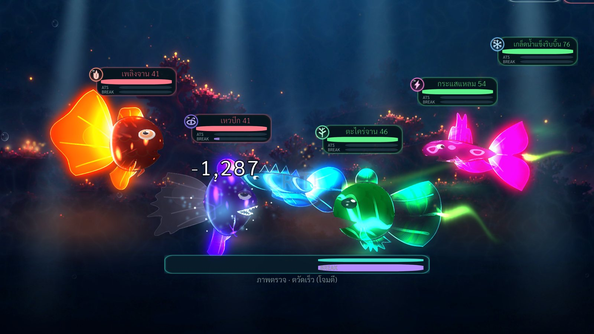
Arena
สนามรบเปลี่ยนตามโลก ศัตรูสุ่มใหม่ทุกครั้ง — ภาพจริงจากเกมตอนตีติดคริ
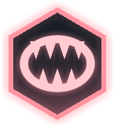
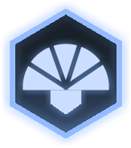
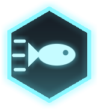
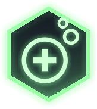
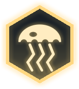
Moves
ทุกท่ามาจากชิ้นส่วนของปลา รวม 80 ท่า แบ่งห้าสาย และทุกตัวมีท่ากัดติดตัว
Rhythm
เลือกท่าแล้วแถบวิ่ง — แตะตอนเข็มอยู่ในเขต กลางเขตสีทองคือ PERFECT แรงที่สุดและโอกาสคริสองเท่า
Parry
ถึงตาศัตรู ฝูงปลาเรืองแสงหุบเข้าหาฟองเกราะ — แตะตอนฝูงถึงแถบทอง = PARRY ลดดาเมจมากและสะท้อนกลับ
Break
หลอด BREAK เติมระหว่างสู้ — เต็มแล้วกดจังหวะ แล้ว cutscene ไม้ตายจบท่าในฉาก
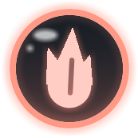
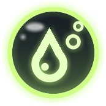
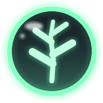
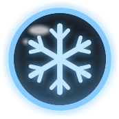
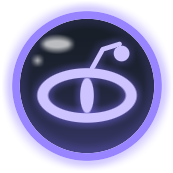
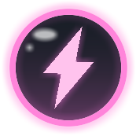
Elements
ธาตุมาจากสีลำตัวของปลา · การ์ดด่านบอกธาตุของศัตรู — จัดทีมให้ชนะทาง
ช่วงที่ 3
ลงด่าน หอ และลานบอส เก็บเกล็ดยีน ไข่ และจับปลามาเป็นสายเลือดใหม่
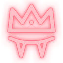
บอสModes
ด่านโลก หกโลก โลกละ 30 ด่าน สามระดับ มีมินิบอสกับบอสทุกบท · หอดำดิ่งสามหอ หอละ 100 ชั้น · ลานบอส สู้บอสเดี่ยวไล่ขั้น
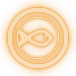
Rewards
แต่ละด่านมี 2–3 wave ศัตรูสุ่มใหม่ทุกครั้ง · ชนะได้เหรียญ exp และเกล็ดยีนของช่องตามด่าน · บางครั้งได้ไข่ป่า
Catch
จับปลาศัตรูธรรมดาในด่านโลก — ติดแล้วได้ไข่ที่มียีนส่วนใหญ่ของตัวนั้น เลือกเองได้ว่าอยากได้สายเลือดแบบไหน
ช่วงที่ 4
จับคู่ คัดยีน ดูโอกาสก่อนผสม แล้วลุ้นลูกที่ดีกว่าเดิม
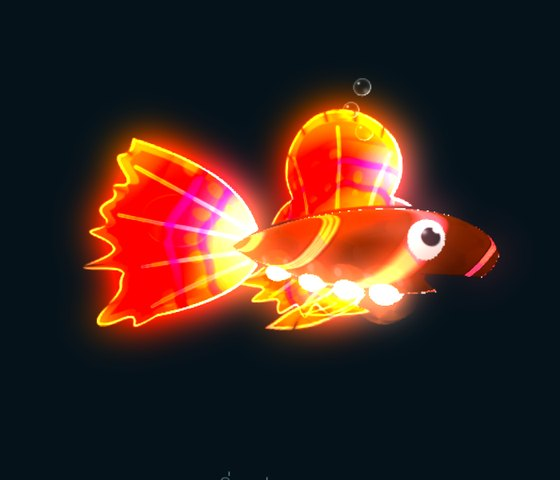
Genes
แต่ละช่องมีแบบ (รูปทรง) และขั้น — แบบบอกว่าได้ท่าอะไร ขั้นบอกว่าแรงแค่ไหน · ลูกได้แต่ละชิ้นจากพ่อหรือแม่
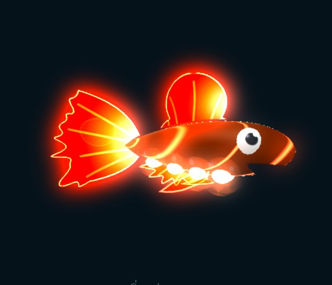
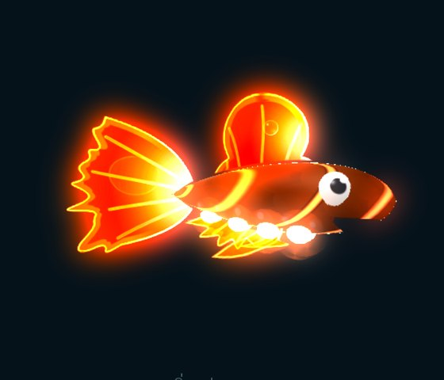
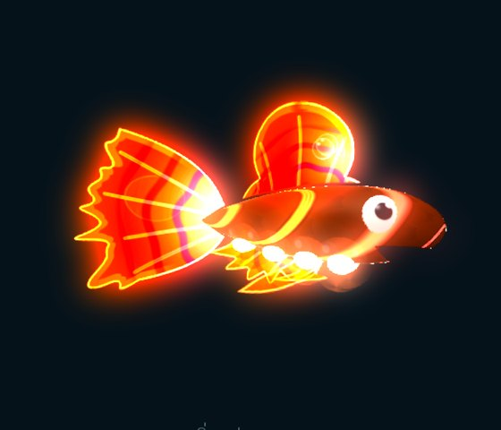
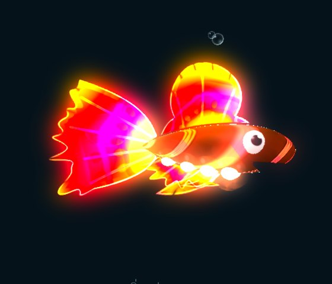
Tiers
ขั้น 1–10 ได้จากการผสมพันธุ์ กำเนิดใหม่ต่อได้ถึงขั้น 13 · ขั้นเฉลี่ยทั้งตัวเพิ่มเอฟเฟกต์ทุกสามขั้น ไม่ใช่แค่สว่างขึ้น — ปลาตัวเดียวกัน ถ่ายจากการ์ดปลาในเกม
Odds
หน้าก่อนผสมบอกโอกาสขั้นของลูกทุกช่อง · เติมเกล็ดยีนของช่องนั้นเพื่อกันถอย เสริม หรือดันขึ้นแน่
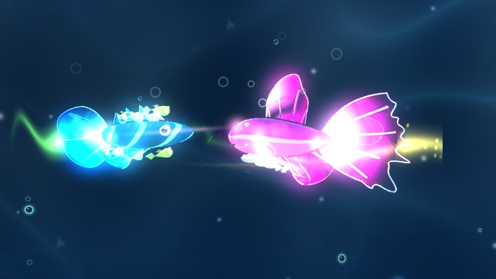
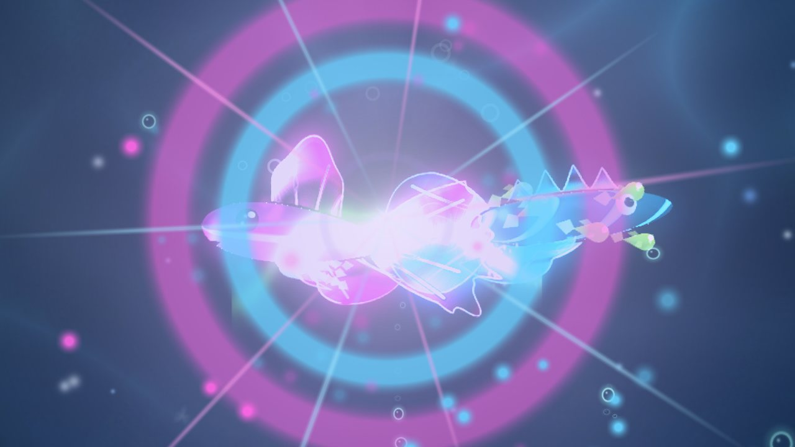
Scene
ปลาสองตัวเต้นเกี้ยว หมุนเกลียวขึ้นคู่กัน แล้วแตะจมูกกันตรงแสงวาบ — ไข่ใบใหม่เกิดตรงนั้น
Inside the abyss
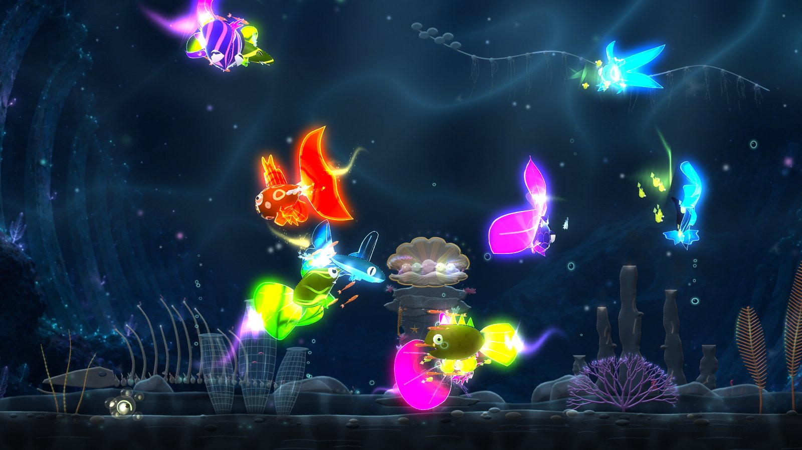
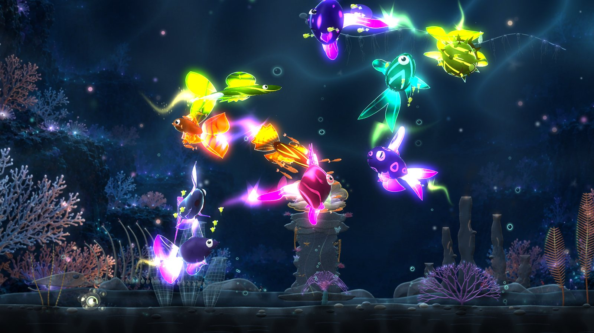
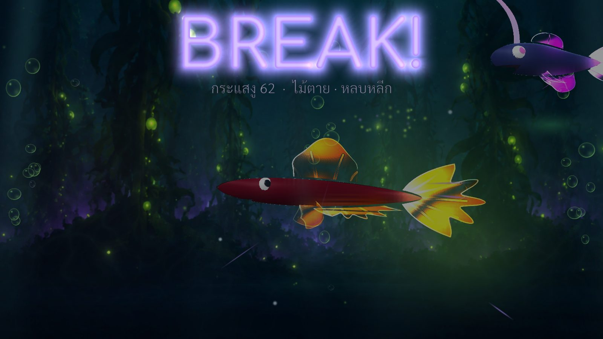
Your lineage awaits
ทุกตัวในตู้เกิดจากการเลือกของคุณ — ไม่มีใครได้ปลาแบบเดียวกัน
Documents
ติดต่อผู้พัฒนา: nech.studios@gmail.com
Raise glowing fish in a tank above the ocean abyss. Breed them, refine their bloodlines, then lead your school into six worlds of the deep sea.
For Android, iPhone and iPad · Free to play · Optional reward ads and in-app purchases
The lineage loop
Every fish is built from nine gene slots. Breed two and the child inherits parts and tiers from both — your goal is new, stronger fish nobody else has.
The loop: raise → battle for loot → breed with it → a better child
How it works
Follow the loop one step at a time — tap an icon on the loop to jump to that step.
Step 1
Hatch eggs, feed, decorate — watch fry grow until they are ready to battle.
Egg
Every fish arrives as an egg — tap a ready one to hatch it. Nine kinds of eggs show where they came from, and the ornament and jelly colour show the child's element.
Grow
A fry needs 3 meals to become a juvenile, then 4 more to become an adult. Only adults can battle and breed.
Decor
43 decorations and backdrops — make the tank a home for your lineage.
Step 2
Moves come from parts. Tap on the beat, parry with your school and bring the winning element.
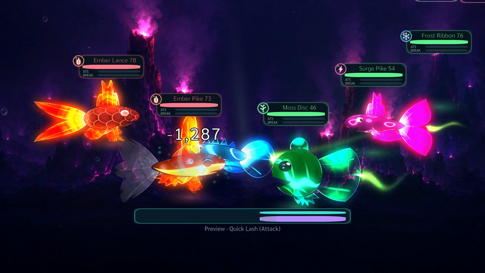
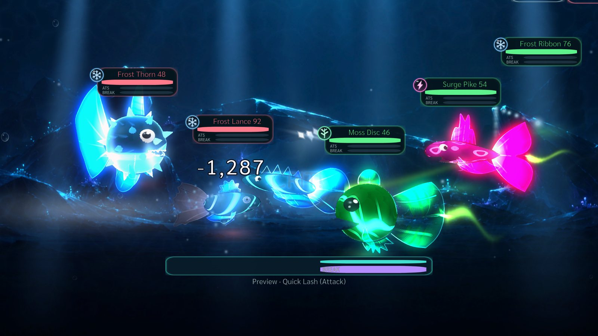
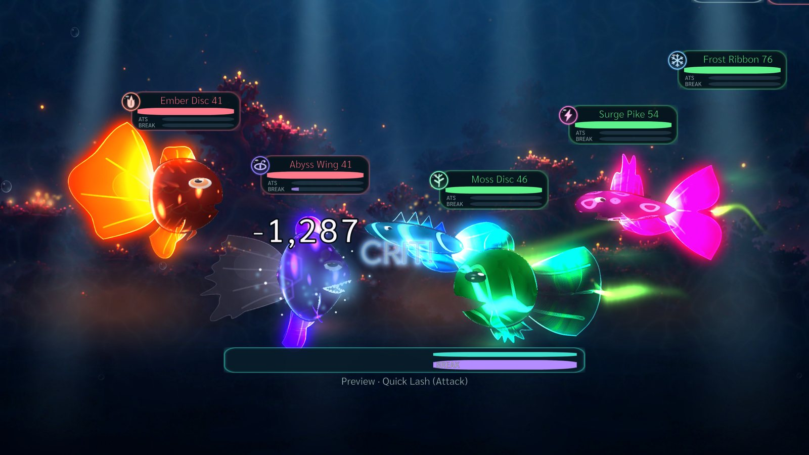
Arena
Every world has its own arena and enemies are re-rolled every time — real in-game frames of a critical hit.
Moves
Every move comes from one of the fish's parts — 80 moves in five schools, and every fish also knows Bite.
Rhythm
After picking a move the bar runs. Tap while the needle is in the zone — the gold centre is PERFECT: the strongest hit and double crit chance.
Parry
On a foe's turn a glowing school closes in on your shield bubble. Tap as it reaches the gold band to PARRY — far less damage and a counter-flash.
Break
The BREAK gauge fills during battle. When it's full, hit the rhythm, then the ultimate cutscene finishes the move.
Elements
A fish's element comes from its body colour. Stage cards show the enemy element — bring the counter.
Step 3
Run stages, towers and the boss arena for gene scales and eggs, and catch fish for new bloodlines.
Modes
World stages — six worlds of 30 stages in three difficulties, with mini-bosses and a boss every chapter · three dive towers of 100 floors · a boss arena of solo bosses, rank by rank.
Rewards
Each stage has 2–3 waves with fresh random enemies. Wins give coins, EXP and gene scales for that stage's slot — and sometimes a wild egg.
Catch
Catch normal enemies in world stages — a catch gives an egg with mostly that fish's genes, so you pick the bloodline you want.
Step 4
Pair them, pick genes, check the odds, then hatch a better child.
Genes
Each slot has a shape and a tier — the shape decides the move, the tier decides its strength. A child inherits each part from one parent.
Tiers
Tiers 1–10 come from breeding, and rebirth takes them to 13. The fish's average tier adds an effect every three tiers — not just a brighter glow. Same fish, captured from the in-game fish card.
Odds
The breeding preview shows the child's tier odds for every slot. Spend that slot's gene scales to prevent drops, boost, or force a rise.
Scene
The pair dance, spiral up together and touch noses in a flash of light — that is where the new egg appears.
Inside the abyss
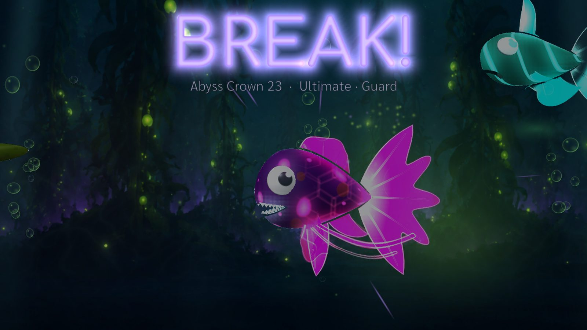
Your lineage awaits
Every fish in your tank comes from your own choices — nobody else gets the same fish.
Documents
Contact the developer: nech.studios@gmail.com